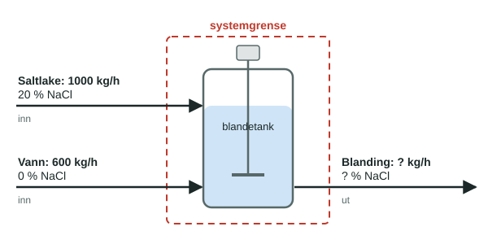

Massebalanse i et anlegg
Hvor mye råstoff går inn i anlegget hver time, og hvor mye produkt kommer ut? Stiger eller synker nivået i tanken? Med en massebalanse kan du svare på slike spørsmål. Det er et regnskap over alt stoff som går inn og ut.
Fra kjemien til anlegget
I Kjemiske prinsipper lærte du loven om massebevaring: atomer forsvinner ikke, og massen er den samme før og etter en reaksjon. I et anlegg bruker vi den samme regelen, men på stoff som strømmer gjennom rør og tanker. Derfor regner vi i masse per tid, ofte kilo per time (kg/h).
Hvor mange kilo som passerer et sted per time, kalles massestrøm. Måler du i liter eller kubikkmeter, må du gjøre om til kilo med tettheten. Se Masse, volum og tetthet og Størrelser og enheter hvis du trenger å repetere.
Systemgrensen: hva regner vi på?
Før du regner, bestemmer du hva du skal regne på. Du tegner en stiplet strek rundt det. Streken kalles systemgrensen. Den kan gå rundt én tank, ett apparat eller et helt anlegg. Du teller bare strømmene som krysser streken, enten inn eller ut. Det som skjer inne i systemet, trenger du ikke å vite alt om.

Inn = ut + opphopning
For alt stoff som krysser systemgrensen, gjelder:
\[ \text{inn} = \text{ut} + \text{opphopning} \]
Opphopning er stoff som blir igjen inne i systemet. Går det mer inn enn ut, stiger nivået i tanken. Går det mer ut enn inn, blir opphopningen negativ, og tanken tømmes.
En lagertank får 500 kg/h inn og leverer 420 kg/h ut.
\[ \text{opphopning} = \text{inn} - \text{ut} = 500 \text{ kg/h} - 420 \text{ kg/h} = 80 \text{ kg/h} \]
Innholdet i tanken øker med 80 kg hver time. Etter 3 timer er det 240 kg mer i tanken.
Kontinuerlig og satsvis drift
- I en kontinuerlig prosess går strømmene inn og ut hele tiden. Når anlegget går jevnt, er nivåer og temperaturer stabile, og opphopningen er null. Da blir balansen enkel: inn = ut. De fleste store prosessanlegg drives slik.
- I en satsvis prosess (batch) fylles tanken eller reaktoren, prosessen går en stund, og så tømmes alt. Mens tanken fylles, er opphopningen stor. Ser du på hele satsen fra start til tom tank, er inn = ut igjen.
På resten av denne siden regner vi på kontinuerlige prosesser uten opphopning.
Totalbalanse og balanse for ett stoff
En strøm består ofte av flere stoffer, for eksempel salt og vann. Da kan du sette opp to slags balanser:
- Totalbalansen gjelder all masse: alt som går inn, er lik alt som går ut.
- Stoffbalansen gjelder ett bestemt stoff, for eksempel saltet: alt saltet som går inn, er lik alt saltet som går ut.
For å finne hvor mye av ett stoff som er i en strøm, bruker du masseprosenten:
\[ \text{massestrøm av stoffet} = \text{massestrøm totalt} \cdot \frac{\text{masseprosent}}{100\,\%} \]
1000 kg/h saltlake med 20 % salt inneholder altså \( 1000 \cdot 0{,}20 = 200 \) kg salt per time.
Begge balansene gjelder så lenge stoffene bare blandes eller skilles. Skjer det en kjemisk reaksjon, gjelder totalbalansen fortsatt, men stoffene endres. Det ser vi på i Resirkulering og utbytte.
Regneeksempel
Oppgave: En blandetank får 1000 kg/h saltlake med 20 % NaCl og 600 kg/h rent vann (se figuren). Tanken går jevnt uten opphopning. Hvor stor er strømmen ut, og hvor mange prosent salt inneholder den?
Løsning:
- Tegn og sett systemgrense: Grensen går rundt tanken. To strømmer inn, én ut.
- Totalbalanse: \( \text{ut} = 1000 \text{ kg/h} + 600 \text{ kg/h} = 1600 \text{ kg/h} \)
- Saltbalanse, inn: Saltlaken har \( 1000 \cdot 0{,}20 = 200 \text{ kg/h} \) salt. Vannet har 0 kg/h salt. Det går altså 200 kg/h salt inn.
- Saltbalanse, ut: Alt saltet må ut igjen: 200 kg/h salt i strømmen ut.
- Masseprosent i strømmen ut: \( \dfrac{200 \text{ kg/h}}{1600 \text{ kg/h}} \cdot 100\,\% = 12{,}5\,\% \)
- Sjekk med vannbalansen: Vann inn er \( 800 + 600 = 1400 \text{ kg/h} \). Vann ut er \( 1600 - 200 = 1400 \text{ kg/h} \). Det stemmer.
Svar: Det går 1600 kg/h ut av tanken, med 12,5 % NaCl.
- Tegn en enkel skisse med alle strømmene.
- Sett systemgrensen.
- Skriv tallene du kjenner på pilene, og sett ? på det du skal finne.
- Sett opp totalbalansen.
- Sett opp stoffbalansen for ett stoff, gjerne det som bare er i én strøm inn.
- Sjekk svaret med en balanse du ikke har brukt, for eksempel vannet.
Hvis det går mer inn i en tank enn ut, stiger nivået til tanken er full. Da kan væske renne over, og etsende eller brennbare stoffer kan komme på avveie. Derfor har tanker nivåmåling og høynivåalarm, og ofte en forrigling som stopper pumpen inn. Mer om dette står i Automasjon. En massebalanse hjelper deg å se på forhånd hvor raskt en tank blir full.
Test deg selv
1. Hva er en systemgrense?
- Den største mengden en tank kan romme
- En tenkt strek rundt det du regner på. Du teller strømmene som krysser den.
- Grensen for hvor mye som kan slippes ut fra anlegget
Systemgrensen bestemmer hva som er «inn» og «ut» i balansen. Den kan gå rundt én tank eller et helt anlegg.
2. En kontinuerlig prosess går jevnt. Hvor stor er opphopningen?
- null
- lik det som går inn
- lik det som går ut
Når nivåene er stabile, hoper ingenting seg opp. Da er inn = ut.
3. En tank får 800 kg/h inn og leverer 650 kg/h ut. Hva skjer?
- Innholdet synker med 150 kg/h.
- Innholdet øker med 150 kg/h.
- Ingenting, for massen er bevart.
Opphopning = inn − ut = 800 − 650 = 150 kg/h. Massen er bevart, men den blir værende i tanken.
4. To strømmer på 300 kg/h og 200 kg/h går inn i en blandetank uten opphopning. Hvor stor er strømmen ut?
- 100 kg/h
- 250 kg/h
- 500 kg/h
Totalbalanse: ut = 300 + 200 = 500 kg/h.
5. En strøm på 2000 kg/h inneholder 5 % salt. Hvor mye salt går det per time?
- 100 kg/h
- 400 kg/h
- 1900 kg/h
2000 kg/h · 0,05 = 100 kg/h salt. Resten, 1900 kg/h, er vann.
Ordliste
| Begrep | Forklaring | Engelsk |
|---|---|---|
| massebalanse | Et regnskap som viser at alt stoff som går inn i en prosess, kommer ut igjen eller hoper seg opp. | mass balance |
| massestrøm | Hvor mange kilo som strømmer forbi per tid, for eksempel i kg/s eller kg/h. | mass flow rate |
| systemgrense | En tenkt strek rundt den delen av anlegget du regner på. Strømmene som krysser streken, er inn og ut i balansen. | |
| opphopning | Stoff som blir igjen inne i systemet fordi det går mer inn enn ut, for eksempel når nivået i en tank stiger. | |
| kontinuerlig prosess | En prosess der stoff går inn og ut hele tiden. I jevn drift er opphopningen null. | continuous process |
| satsvis prosess | En prosess der en tank eller reaktor fylles, behandles og tømmes, én sats om gangen. | batch process |
| stoffbalanse | En massebalanse for ett bestemt stoff i strømmene, for eksempel salt. |
Les mer
- Fagstoff i Kjemiske prinsipper: Konsentrasjon (masseprosent) og Fortynning. Å fortynne et konsentrat er også en massebalanse.
- Neste side: Separasjon, der én strøm deles i to.
Om kildene: Teksten, eksemplene og figurene på denne siden er laget for dette nettstedet. Siden bygger på undervisningsopplegg i kjemiprosess- og laboratoriefag ved Sauda vgs, som er utarbeidet med utgangspunkt i blant annet Kjemien stemmer, Laboranten og åpne nettkilder.